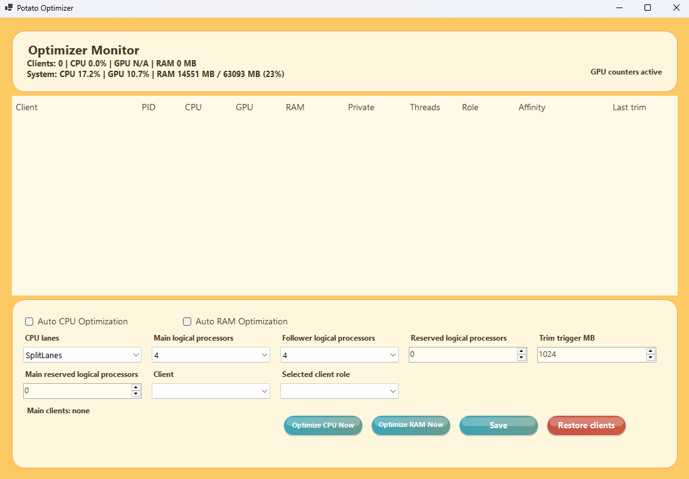
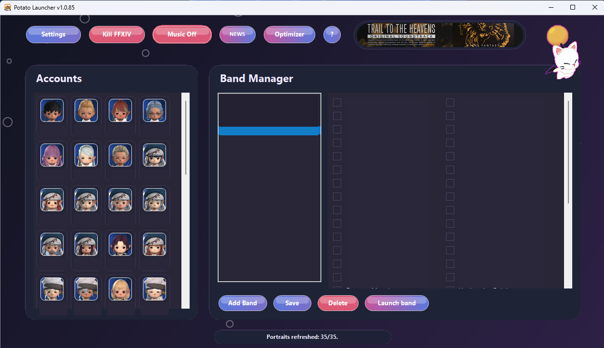

Watch the clients breathe.
See client and system usage, then optimize CPU or RAM from the same tool.
A clean Windows launcher for XIVLauncher accounts, portraits, band queues, and optimizer monitoring.

Potato Launcher keeps the daily multibox flow simple: pick accounts, launch the band, watch what is loaded, and keep performance tools nearby.

See client and system usage, then optimize CPU or RAM from the same tool.
Download the Windows installer from GitHub Releases. Your app data stays in the Potato Launcher folder between updates.